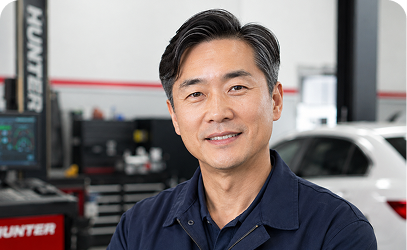
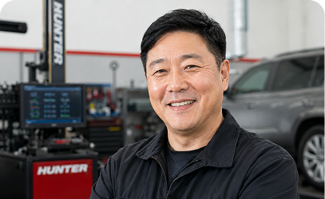
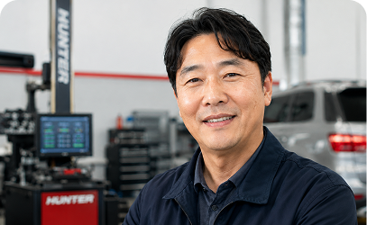

헌터 장비를 사용하면서 가장 크게 느낀 변화는 정비 과정의 신뢰도였습니다. 정확한 측정 데이터와 빠른 작업 흐름 덕분에 고객 만족도와 작업 효율을 함께 높일 수 있었습니다.

헌터 장비 도입 후 정비의 정확도와 고객 만족도가 함께 높아졌습니다. 장비 사용을 운영하면서 가장 중요하게 생각한 것은 고객이 믿고 맡길 수 있는 정비였습니다.

헌터는 단순한 장비가 아니라, 정비소의 경쟁력을 높여주는 파트너입니다. 앞으로도 고객에게 더 정확하고 신뢰할 수 있는 서비스를 제공하겠습니다.
헌터 장비 도입 후, 정비의 정확도와 고객 만족도가 함께 높아졌습니다. 장비 사용을 운영하면서 가장 중요하게 생각한 것은 고객이 믿고 맡길 수 있는 정비였습니다.
헌터 장비를 사용하면서 가장 크게 느낀 변화는 정비 과정의 신뢰도였습니다. 정확한 측정 데이터와 빠른 작업 흐름 덕분에 정비 품질도 높아졌습니다.
헌터는 단순한 장비가 아니라, 정비소의 경쟁력을 높여주는 파트너입니다. 앞으로도 고객에게 더 정확하고 신뢰할 수 있는 정비 서비스를 제공하겠습니다.
헌터는 단순한 장비가 아니라, 정비소의 경쟁력을 높여주는 파트너입니다. 앞으로도 고객에게 더 정확하고 신뢰할 수 있는 정비 서비스를 제공하기 위해 헌터와 함께하겠습니다.